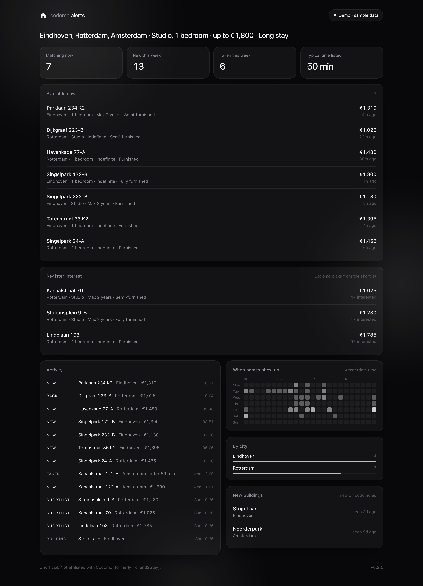

Gratis · open source · zelf te hosten · onofficieel
Weet het meteen als er een Codomo-woning online komt.
Goede woningen zijn binnen een paar minuten weg. Deze tool houdt de nieuwe woningen op codomo.eu (voorheen Holland2Stay) voor je in de gaten en stuurt je een bericht zodra er een woning is die past: jouw steden, jouw grootte, jouw budget.
English · Nederlands · Español · Português · Deutsch

In een minuut aan de slag
Docker
docker run -d --name codomo-alerts --restart unless-stopped \
-e CODOMO_CITIES="Eindhoven, Den Haag" \
-e CODOMO_BEDROOMS="studio, 1" \
-e CODOMO_PRICE_MAX=1600 \
-e CODOMO_NOTIFY="tgram://BOT_TOKEN/CHAT_ID" \
-v codomo-data:/data -p 127.0.0.1:8080:8080 \
ghcr.io/kooroshkz/codomo-alertsHet dashboard staat op localhost:8080. Werkt ook op een Raspberry Pi of NAS.
Python
pipx install codomo-alerts
codomo-alerts init
codomo-alerts watchinit stelt een paar vragen en stuurt een testbericht.
Stadsnamen werken in het Nederlands en het Engels: Den Haag en The Hague, 's-Hertogenbosch en Den Bosch. Wil je alleen Nederland? Zet CODOMO_COUNTRIES=nl. Zonder steden en landen krijg je alles wat Codomo aanbiedt, ook in Spanje, Portugal en Oostenrijk.
Alle Codomo-steden
Elk land waar Codomo verhuurt, en nieuwe landen zodra Codomo ze opent.
Nederland
Eindhoven, Rotterdam, Amsterdam, Den Haag, Utrecht, Groningen, Maastricht en nog 19 steden. Direct boeken of interesse registreren.
Spanje
Granada (Codomo Granada). Kamers vanaf ongeveer €395 per maand, sommige gedeeld, sommige alleen voor vrouwen of alleen voor mannen.
EspañolPortugal
Carcavelos, bij Lissabon (Codomo Lombos). Studentenkamers vanaf ongeveer €869 per maand.
PortuguêsMeldingen in de app die je al gebruikt
- Telegram
- Discord
- ntfy
- Slack
- Signal
- Matrix
- Pushover
- Gotify
- Home Assistant
- Webhooks
- en 100+ meer via Apprise
De meldingen zelf zijn in het Engels.
Wat je krijgt
Jouw zoekopdracht
Landen, steden, slaapkamers, budget, contractduur, inrichting en verhuisdatum.
Alleen wat nieuw is
Nieuwe woningen, woningen die terug zijn, shortlist-woningen die direct boekbaar worden en prijsdalingen. Nooit twee keer dezelfde.
Interesse registreren
Woningen waarbij Codomo iemand kiest uit een shortlist, met hoeveel mensen zich al hebben aangemeld.
Nieuwe gebouwen
Een bericht als er een nieuwe gebouwpagina op codomo.eu verschijnt.
Dashboard
Wat er beschikbaar is, wat weg is en hoe snel, en op welke uren woningen meestal online komen.
Netjes gebouwd
Een check om de paar minuten, vaker op de uren dat woningen vrijkomen. Het zegt wie het is en remt af als dat gevraagd wordt.
Vragen
Wat is er met Holland2Stay gebeurd?
Holland2Stay heet sinds 16 november 2026 Codomo en holland2stay.com stuurt door naar codomo.eu. Deze tool heette holland2stay-alerts en leest codomo.eu sinds versie 0.2.0.
Hoe krijg ik nu meldingen voor Holland2Stay-woningen?
Installeer codomo-alerts. Tools die de oude Holland2Stay API gebruikten werken niet meer. Je stadsnamen werken nog steeds.
Is er een Codomo-app die nieuwe woningen meldt?
Codomo gebruikt het zoekprofiel in je huurdersportaal voor woningen met interesse registreren. Voor een bericht bij elke nieuwe woning, gefilterd zoals jij wilt en in de app die je al gebruikt, is deze gratis, onofficiële tool.
Boekt het een woning voor mij?
Nee. Het laat het je weten, jij boekt zelf op codomo.eu. Automatisch boeken is tegen hun voorwaarden. Houd een tabblad open en blijf ingelogd, dan ben je één klik verwijderd.
Wat is er met de loting gebeurd?
Codomo heeft die vervangen door Register interest: je meldt je aan voor een woning en Codomo kiest iemand uit de shortlist, op basis van je zoekprofiel. Wie het eerst komt, wint dus niet. Je krijgt een bericht als zo'n woning bij je zoekopdracht past, met hoeveel mensen al interesse hebben.
Hoe snel zijn de meldingen?
Meestal binnen twee minuten op werkdagen in de uren dat woningen vrijkomen, de rest van de dag binnen een paar minuten.
Heb ik een server nodig?
Nee. Elke computer die aan blijft werkt: een laptop aan de stroom, een Raspberry Pi, een NAS of een kleine VPS.
In welke taal zijn de meldingen?
In het Engels, net als het dashboard. Stadsnamen mag je in het Nederlands invullen.